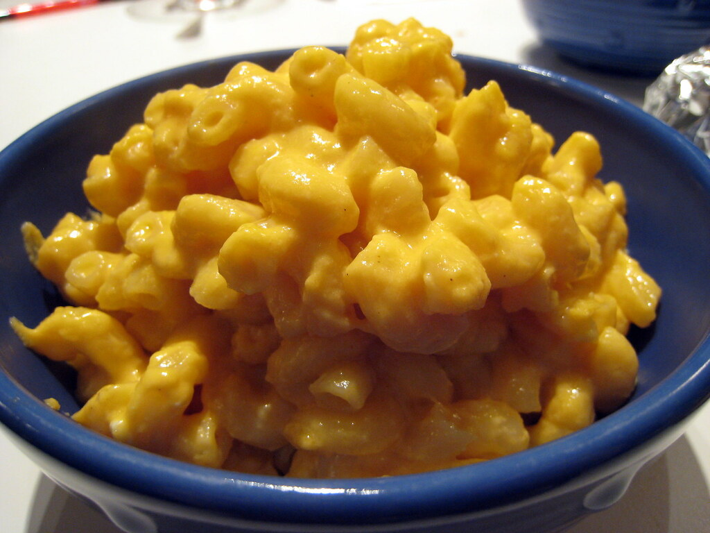

Simple Mac & Cheese

"Stovetop Mac & Cheese" by fritish is licensed under CC BY-NC-SA 2.0.
To view a copy of this license, visit https://creativecommons.org/licenses/by-nc-sa/2.0/?ref=openverse&atype=rich
Description
This is a simple, stove-top mac and cheese just like grandma used to make.
Ingredients:
- 1 box elbow macaroni
- 1/4 cup butter or margerine
- 1/4 cup all-purpose flour
- 1/2 teaspoon salt
- ground black pepper to taste
- 2 cups milk
- 2 cups shredded Cheddar cheese
Steps:
-
Cook elbow macaroni per package instructions until it is al dente.
-
Melt butter in saucepan over medium heat
-
Stir in flour, salt, and pepper until smooth (about 5 minutes).
-
Slowly pour milk into butter-flour mixture while stirring continuously
until mixture is smooth and bubbling (about 5 minutes).
-
Add Cheddar Cheese to milk mixture and stir until cheese is melted (about 2 to 4 minutes).
-
Fold macaroni into cheese sauce until coated.
-
Serve and enjoy!